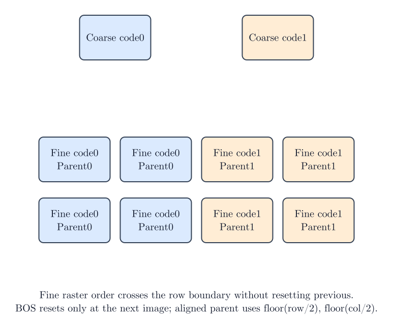
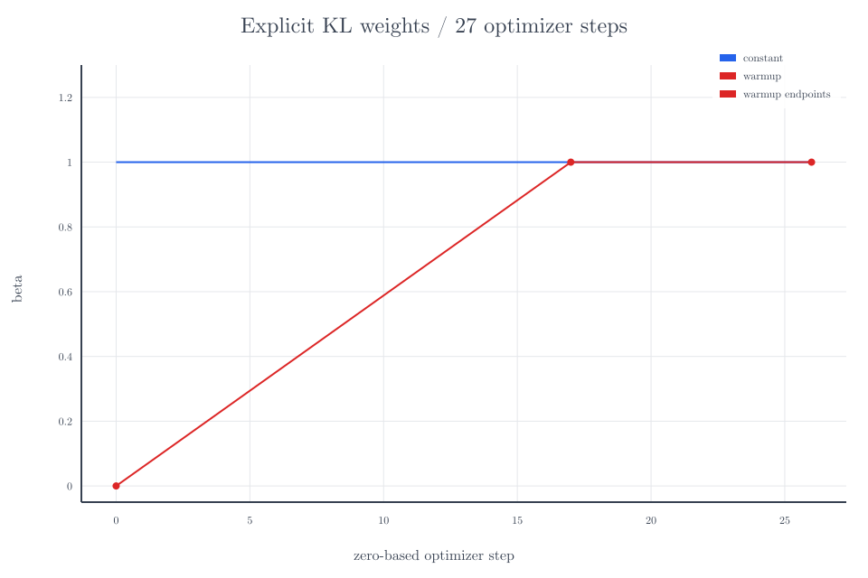
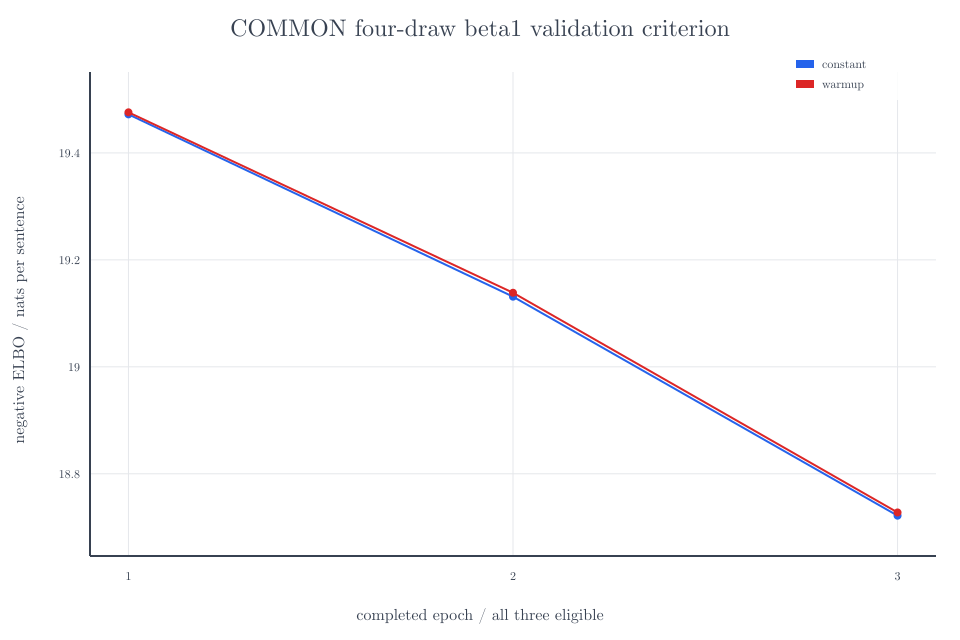
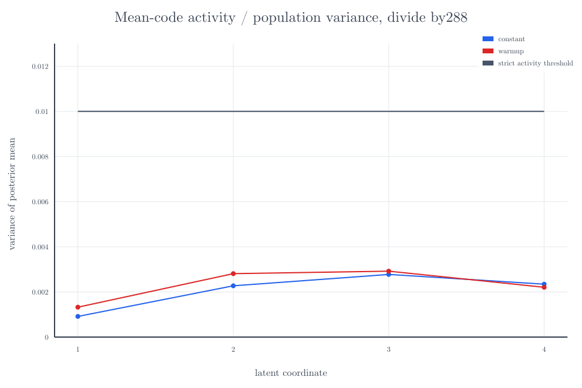
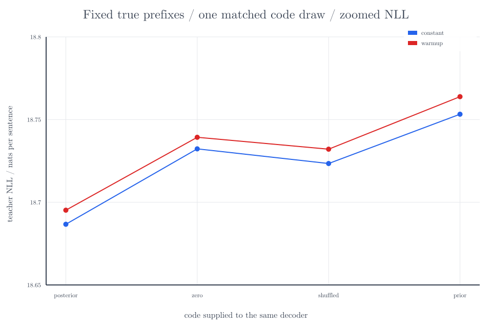

Posterior Collapse: Measure Latent Use Before Claiming a Cure
Abstract
A recurrent decoder can predict from true previous tokens while using little information from its global latent code. We compare a constant KL weight with an eighteen-step linear warmup in the same compact sentence VAE. Both runs use all 432 local grammar sentences, identical initial weights, batches and Gaussian banks, three epochs/27 explicit Adam updates each, and the same four-draw unweighted validation criterion. Both select epoch 3. Test negative ELBO is 18.680923 nats/sentence for constant weight and 18.687373 for warmup. Neither run has an active mean coordinate at the prespecified variance threshold. Fixed-prefix code ablations, signed finite-mixture density estimates and unfiltered free decoding expose what these numbers do and do not establish. This single short teaching run supplies no evidence that warmup fixes collapse or learns useful language semantics.
Two paths into an autoregressive decoder
A global Gaussian code is useful only if the decoder uses its information. Under teacher forcing, the decoder also sees the *true previous target tokens*. Those prefixes can support prediction while the code remains weak. [Bowman et al. (2016)](https://arxiv.org/abs/1511.06349) study sentence VAEs and KL cost annealing. Our fixed vocabulary 19/embedding 8/GRU16/code 4 model is a small teaching adaptation, with separate encoder/decoder embeddings and no word dropout, not their language-corpus training recipe.
#include <dm/dm.hpp>
int main() {
std::filesystem::create_directories("build");
dm::graphics::Diagram d(44, 1500);
dm::graphics::DiagramNodeStyle st;
st.width = 4.5;
st.height = 2.5;
st.font_size = 20;
d.node("x", {0, 0}, "Target tokens x\nPAD masked", st)
.node("enc", {6, 0}, "Encoder GRU16\nEmbedding8", st)
.node("q", {12, 0}, "q(z|x)\nGaussian code4", st)
.node("init", {18, 0}, "Sample z\ntanh(dense(z))", st)
.node("dec", {24, 0}, "Decoder GRU16\nSeparate embedding8", st)
.node("pred", {30, 0}, "Next-token logits\nMasked NLL", st)
.node("prefix", {18, -5}, "BOS then previous\nTRUE target", st)
.node("prior", {12, 5}, "Standard normal prior\nbeta times KL cost", st)
.edge("x", "enc")
.edge("enc", "q")
.edge("q", "init")
.edge("init", "dec")
.edge("dec", "pred")
.edge("prefix", "dec")
.edge("q", "prior")
.text(
{15, -9},
"At fixed z, future prefixes cannot affect earlier logits.\nFree generation feeds "
"emitted tokens back instead of true prefixes.",
21)
.save_svg("build/collapse_method.svg");
}
PAD 0 leaves the encoder state unchanged. EOS 2 is a normal nonzero encoder token; reconstruction loss includes EOS and excludes PAD. Decoder inputs are BOS 1 followed by previous targets, never the current target. The global code enters only the decoder's initial state. All 22 trainable leaves/3,243 scalars and all recurrent/noise gradients remain live.
For per-sentence masked categorical NLL N_b and diagonal-Gaussian KL K_b, training uses
NLL sums non-PAD token losses before averaging sentences. Beta 0 removes the KL contribution, while beta 1 gives the ordinary negative ELBO. Comparing training objectives with different beta does not compare like-for-like evidence bounds.
A hand-checkable density decomposition
The empirical posterior mixture over N cases is qbar(z)=N^−1 sum_i q_i(z). At an aligned point z_i, the exact log-ratio identity is
[Hoffman and Johnson's ELBO surgery](https://approximateinference.org/archives/2016/accepted/HoffmanJohnson 2016.pdf) provides the decomposition perspective. Here every evaluated point uses the *same complete finite mixture*, including its own posterior. Self-inclusion and finite-sample bias matter: the sampled information/aggregate terms are not population mutual information, a true aggregate KL, or semantic scores. Signed estimates are retained; analytic KL generally differs from the sampled conditional log ratio by Monte Carlo error.
For two one-dimensional posteriors N(−2,1),N(2,1), mean analytic KL is 2 and variance of the posterior means is 4. Evaluate at the two means, explicitly choosing z_i=mu_i: the conditional log ratio is 2, the information term is log 2−log(1+exp(−8)), and the aggregate term is the difference. These are *fixed density evaluation points, not random posterior draws*. The actual experiment below separately retains four Gaussian draws in its synthetic controls and fitted diagnostics.
#include <dm/dm.hpp>
int main() {
namespace n = dm::nn;
namespace m = n::models;
const auto t = n::DType::Float64;
const auto mu = n::from_vector(std::vector<double>{-2, 2}, {2, 1}), zero = n::zeros({2, 1}, t);
const auto c = m::CollapseStatistics(zero, zero, {zero}),
a = m::CollapseStatistics(mu, zero, {mu});
const double expected = std::log(2.) - std::log1p(std::exp(-8.));
if (std::abs(a.analytic_kl - 2) > 1e-14 || std::abs(a.mixture_information - expected) > 1e-14 ||
a.active_units != 1)
return 1;
std::print(
"| fixed control | analytic KL | log q_i/p | log q_i/qbar | log qbar/p | active units "
"|\n|---|---:|---:|---:|---:|---:|\n| collapsed | {:.9f} | {:.9f} | {:.9f} | {:.9f} | {} "
"|\n| separated | {:.9f} | {:.9f} | {:.9f} | {:.9f} | {} |\n",
c.analytic_kl,
c.sampled_conditional_kl,
c.mixture_information,
c.aggregate_kl,
c.active_units,
a.analytic_kl,
a.sampled_conditional_kl,
a.mixture_information,
a.aggregate_kl,
a.active_units);
auto p = dm::graphics::RPlot::create();
p.bars(
{1, 2, 3, 4},
{a.analytic_kl, a.sampled_conditional_kl, a.mixture_information, a.aggregate_kl},
"separated means",
dm::RGBA{37, 99, 235},
.6)
.points({1, 2, 3, 4}, {0, 0, 0, 0}, "collapsed reference", dm::RGBA{220, 38, 38}, 5)
.x_ticks({1, 2, 3, 4}, {"analytic KL", "log q/p", "log q/qbar", "log qbar/p"})
.y_limits(-.15, 2.2)
.title("Fixed evaluation at posterior means / no random draws")
.x_label("density quantity")
.y_label("nats")
.save_svg("build/collapse_controls.svg");
}| fixed control | analytic KL | log q_i/p | log q_i/qbar | log qbar/p | active units |
|---|---|---|---|---|---|
| collapsed | 0.000000000 | 0.000000000 | 0.000000000 | 0.000000000 | 0 |
| separated | 2.000000000 | 2.000000000 | 0.692811774 | 1.307188226 | 1 |

Match everything except the KL schedule
The constant schedule is beta=1. The warmup schedule is min(1,float(step)/float(17)) for zero-based steps 0–26: steps 0–17 include both endpoints, then beta stays 1. Source Float32 rounding is intentional. Beta is calculated from the visible optimizer step; no counter is hidden in the model. Each run has 27 updates, so both spend their final ten updates at beta 1.
#include <dm/dm.hpp>
int main() {
std::vector<double> step, constant, warm;
for (int k = 0; k < 27; ++k) {
step.push_back(k);
constant.push_back(dm::nn::models::CollapseBeta(false, k));
warm.push_back(dm::nn::models::CollapseBeta(true, k));
}
auto p = dm::graphics::RPlot::create();
p.lines(step, constant, "constant", dm::RGBA{37, 99, 235}, 2)
.lines(step, warm, "warmup", dm::RGBA{220, 38, 38}, 2)
.points({0, 17, 26}, {0, 1, 1}, "warmup endpoints", dm::RGBA{220, 38, 38}, 4)
.title("Explicit KL weights / 27 optimizer steps")
.x_label("zero-based optimizer step")
.y_label("beta")
.y_limits(-.05, 1.3)
.save_svg("build/collapse_schedule.svg");
}
Native grammar data and the complete editable fit
The six factors have cardinalities 2×3×3×2×4×3=432. Article, colour, shape, verb and direction are mandatory; the adverb factor is absent/quickly/slowly. Sentences have six or seven targets, including EOS. Every split is balanced in each factor; residue 2*((colour+shape+adverb)%3)+(article+verb+direction)%2 assigns test 0, validation 1, fit 2–5, producing 288/72/72 disjoint combinations. Native preparation orders source IDs increasingly; the loader preserves any valid supplied ordering and regenerates every sentence, prefix, factor and identity. This is exhaustive procedural teaching data, not a language benchmark.
#include <dm/dm.hpp>
int main() {
const auto root = dm::datasets::prepare_example_data("sequence-vae-assets");
const auto pools = dm::nn::models::LoadSequenceVaeData(root + "/sequence_vae");
std::print("| pool | rows | source ID | first sentence |\n|---|---:|---:|---|\n");
for (int k = 0; k < 3; ++k) {
const auto& p = pools[k];
std::print(
"| {} | {} | {} | {} |\n",
k == 0 ? "fit"
: k == 1 ? "validation"
: "test",
p.tokens.size(0),
p.source.to_vector<int>()[0],
dm::nn::models::SequenceText(p.tokens, 0));
}
std::print(
"\nAll432 sentences, fixed19-word vocabulary, EOS/PAD and previous-target prefixes verified. "
"Factors/IDs are provenance, not network inputs.\n");
}| pool | rows | source ID | first sentence |
|---|---|---|---|
| fit | 288 | 1 | a red circle moves left quickly [eos] |
| validation | 72 | 3 | a red circle moves right [eos] |
| test | 72 | 0 | a red circle moves left [eos] |
All432 sentences, fixed19-word vocabulary, EOS/PAD and previous-target prefixes verified. Factors/IDs are provenance, not network inputs.
Both models initialize all 22 leaves using seed 3109 in the same order. BatchOrder(288,32,3119) provides nine updates per epoch. Adam uses rate 0.003, moments 0.9/0.999 and epsilon 1e−8. Fresh per-epoch Gaussian banks use 3192/3193/3194; fixed four-draw fit/validation/test banks use 3137/3163/3181. Both Float64 MT19937/Box–Muller banks and their Float32 casts are saved. No clipping, free bits, word dropout or hidden optimization is added.
Completed epochs 1–3 are eligible, excluding epoch 0. *Both schedules select by the same four-draw validation NLL+KL at beta 1*, never by their differently weighted training losses. Float32 per-case values accumulate in Float64, draw then row, retaining the source selection criterion. A fresh store initialized before model-only load reproduces that criterion. Optimizer state is deliberately not part of these checkpoints. The visible forward, BPTT and Adam step are inside the editable program; evaluation guards do not hide fitting.
#include <dm/dm.hpp>
namespace nn = dm::nn;
namespace ae {
using nn::models::CollapseBeta;
using nn::models::CollapseStatistics;
using nn::models::CollapseSummary;
using nn::models::SequenceDataArrays;
using nn::models::SequenceText;
using nn::models::SequenceVaeData;
using nn::models::SequenceVaeOutput;
void Require(bool condition, const std::string& why) {
if (!condition)
throw std::runtime_error(why);
}
void Near(double x, double y, double tolerance, const std::string& why) {
Require(std::abs(x - y) <= tolerance, why);
}
nn::Tensor Find(const nn::NamedTensors& a, const std::string& name) {
for (const auto& [key, t] : a)
if (key == name)
return t;
throw std::runtime_error(name);
}
std::vector<float> Bytes(const nn::Tensor& t) {
return t.contiguous().to_vector<float>();
}
nn::NamedTensors Arrays(const nn::ParameterStore& p) {
nn::NamedTensors out;
for (const auto& name : p.names())
out.emplace_back(name, p.at(name).detach().clone());
return out;
}
auto Snapshot(const nn::ParameterStore& p) {
return p.flatten();
}
double MaxAbsDiff(const nn::Tensor& a, const nn::Tensor& b, std::int64_t count) {
const auto x = Bytes(a), y = Bytes(b);
double result = 0;
for (std::int64_t i = 0; i < count; ++i)
result = std::max(result, std::abs(double(x[i]) - double(y[i])));
return result;
}
struct VaeNoiseBank {
nn::Tensor standard, epsilon;
};
VaeNoiseBank BetaVaeNoise(std::int64_t n, std::int64_t k, std::uint32_t seed) {
auto standard = nn::models::GaussianNoise({n, 4}, k, seed);
return {standard, nn::cast(standard, nn::DType::Float32)};
}
nn::Tensor BetaVaeNoiseAt(const VaeNoiseBank& b, std::int64_t k) {
return nn::select(b.epsilon, 0, k).contiguous();
}
inline nn::NamedTensors SequenceFields(const SequenceVaeOutput& o) {
return {
{"decoder_inputs", o.decoder_inputs},
{"encoder_state", o.encoder_state},
{"encoder_states", o.encoder_states},
{"mu", o.mu},
{"log_variance", o.log_variance},
{"z", o.z},
{"decoder_initial", o.decoder_initial},
{"decoder_states", o.decoder_states},
{"logits", o.logits},
{"probability", o.probability},
{"predicted_ids", o.predicted_ids},
{"mask", o.mask},
{"token_nll", o.token_nll},
{"nll", o.nll},
{"kl", o.kl},
{"correct", o.correct},
{"valid_tokens", o.valid_tokens},
{"loss", o.loss}};
}
void Warm(nn::ParameterStore& p) {
nn::NoGradGuard guard;
nn::models::SequenceVariationalAutoencoder(
p, nn::from_vector(std::vector<int>(7, 3), {1, 7}), nn::zeros({1, 4}));
Require(p.size() == 22 && p.count() == 3243, "source census22/3243");
}
SequenceVaeOutput
Evaluate(nn::ParameterStore& p, const nn::Tensor& tokens, const nn::Tensor& noise) {
nn::NoGradGuard guard;
auto out = nn::models::SequenceVariationalAutoencoder(p, tokens, noise);
for (auto* t :
{&out.decoder_inputs,
&out.encoder_state,
&out.encoder_states,
&out.mu,
&out.log_variance,
&out.z,
&out.decoder_initial,
&out.decoder_states,
&out.logits,
&out.probability,
&out.predicted_ids,
&out.mask,
&out.token_nll,
&out.nll,
&out.kl,
&out.correct,
&out.valid_tokens,
&out.loss}) {
*t = t->contiguous();
if (t->dtype() == nn::DType::Float32)
for (float v : t->to_vector<float>())
Require(std::isfinite(v), "all18 fields finite");
}
return out;
}
nn::models::SequenceGeneration Generate(nn::ParameterStore& p, const nn::Tensor& z) {
nn::NoGradGuard guard;
return nn::models::SequenceGenerate(p, z);
}
std::pair<nn::Tensor, nn::Tensor>
Teacher(nn::ParameterStore& p, const nn::Tensor& z, const nn::Tensor& inputs) {
nn::NoGradGuard guard;
auto out = nn::models::SequenceTeacher(p, z, inputs);
return {out.logits.contiguous(), out.probability.contiguous()};
}
std::vector<double>
SequenceVaeScore(nn::ParameterStore& p, const nn::Tensor& tokens, const VaeNoiseBank& bank) {
double nll = 0, kl = 0, correct = 0, valid = 0;
const auto n = tokens.size(0), samples = bank.epsilon.size(0);
for (std::int64_t k = 0; k < samples; ++k) {
auto out = Evaluate(p, tokens, BetaVaeNoiseAt(bank, k));
const auto a = out.nll.to_vector<float>(), c = out.correct.to_vector<float>(),
v = out.valid_tokens.to_vector<float>(), d = out.kl.to_vector<float>();
for (std::int64_t b = 0; b < n; ++b) {
nll += a[b];
correct += c[b];
valid += v[b];
if (k == 0)
kl += d[b];
}
}
const double m = double(n) * double(samples);
return {nll / m, kl / n, nll / m + kl / n, std::exp(nll / valid), correct / valid};
}
inline void SaveCollapseStatistics(const std::filesystem::path& path, const CollapseSummary& s) {
std::ofstream out(path);
out.precision(17);
out << "{\"analytic_mean_kl\":" << s.analytic_kl
<< ",\"sampled_conditional_kl\":" << s.sampled_conditional_kl
<< ",\"empirical_mixture_information\":" << s.mixture_information
<< ",\"empirical_aggregate_kl\":" << s.aggregate_kl
<< ",\"active_units_variance_threshold_0_01\":" << s.active_units << ",\"unit_kl\":[";
for (int j = 0; j < 4; ++j)
out << (j ? "," : "") << s.unit_kl[j];
out << "],\"mu_variance\":[";
for (int j = 0; j < 4; ++j)
out << (j ? "," : "") << s.mu_variance[j];
out << "]}\n";
Require(bool(out), "posterior collapse diagnostic json");
}
} // namespace ae
namespace check {
using ae::Near;
using ae::Require;
} // namespace check
using ae::Require;
namespace {
namespace nn = datamunge::nn;
std::vector<double>
Score(nn::ParameterStore& m, const nn::Tensor& x, const ae::VaeNoiseBank& bank) {
auto s = ae::SequenceVaeScore(m, x, bank);
return {s[0], s[1], s[2], s[3]};
}
double TokenNll(const nn::Tensor& tokens, const nn::Tensor& probabilities) {
const auto t = tokens.to_vector<int>();
const auto p = probabilities.to_vector<float>();
double sum = 0;
for (std::int64_t b = 0; b < tokens.size(0); ++b)
for (int s = 0; s < 7; ++s) {
const int id = t[b * 7 + s];
if (id)
sum -= std::log(double(p[(b * 7 + s) * 19 + id]));
}
return sum / tokens.size(0);
}
void Add(nn::NamedTensors& out, const std::string& prefix, const nn::NamedTensors& fields) {
for (const auto& [key, value] : fields)
out.emplace_back(prefix + key, value);
}
void Controls(const std::filesystem::path& root) {
auto mu = nn::zeros({8, 4}), lv = nn::zeros({8, 4});
std::vector<float> s(32, 0);
for (int b = 0; b < 8; ++b)
s[b * 4] = b % 2 ? 2 : -2;
auto shifted = nn::from_vector(s, {8, 4});
auto noise = ae::BetaVaeNoise(8, 4, 4081);
std::vector<nn::Tensor> collapsed, active;
nn::NamedTensors arrays{
{"mu", mu},
{"log_variance", lv},
{"active_mu", shifted},
{"standard", noise.standard},
{"epsilon", noise.epsilon}};
for (int k = 0; k < 4; ++k) {
collapsed.push_back(ae::BetaVaeNoiseAt(noise, k));
auto z = (ae::BetaVaeNoiseAt(noise, k) + shifted).contiguous();
active.push_back(z);
arrays.emplace_back("active_z" + std::to_string(k), z);
}
auto c = ae::CollapseStatistics(mu, lv, collapsed),
a = ae::CollapseStatistics(shifted, lv, active);
check::Near(c.analytic_kl, 0, 0, "known q=N0I collapsedcontrol KLexactzero");
check::Require(
c.active_units == 0 && a.active_units == 1, "known collapsed/active meanvariance controls");
check::Near(a.analytic_kl, 2, 0, "known separatedmeans conditionalKL2");
check::Require(
std::abs(c.mixture_information) < 1e-12 && std::abs(c.aggregate_kl) < 1e-12 &&
a.mixture_information > .1,
"empirical mixture information identifies synthetic controls");
ae::SaveCollapseStatistics(root / "collapsed_control.json", c);
ae::SaveCollapseStatistics(root / "active_control.json", a);
nn::save_npz((root / "diagnostic_controls.npz").string(), arrays);
}
void Run(
const std::vector<ae::SequenceVaeData>& pools,
const std::filesystem::path& root,
int epochs,
bool warm,
const std::string& init) {
std::filesystem::create_directories(root);
nn::save_npz((root / "data.npz").string(), ae::SequenceDataArrays(pools));
nn::NamedTensors bank;
std::vector<ae::VaeNoiseBank> noise;
for (int k = 0; k < 3; ++k) {
const std::string split = k == 0 ? "fit" : k == 1 ? "validation" : "test";
noise.push_back(
ae::BetaVaeNoise(
pools[k].tokens.size(0),
4,
3137 + (k == 0 ? 0
: k == 1 ? 26
: 44)));
bank.emplace_back(split + "_standard", noise[k].standard);
bank.emplace_back(split + "_epsilon", noise[k].epsilon);
}
nn::save_npz((root / "fixed_noise.npz").string(), bank);
nn::ParameterStore model(3109);
ae::Warm(model);
nn::OptimizerConfig config;
config.kind = nn::OptimizerKind::Adam;
nn::Optimizer optimizer(model, .003, config);
if (!init.empty())
model.load(init);
nn::save_npz((root / "initial_arrays.npz").string(), ae::Arrays(model));
nn::BatchOrder order(288, 32, 3119);
std::ofstream history(root / "history.tsv"), batches(root / "batches.tsv"),
schedule(root / "schedule.tsv");
history.precision(17);
schedule.precision(17);
history << "epoch\tvalidation_nll\tvalidation_kl\tvalidation_negative_elbo\tvalidation_teacher_"
"reconstruction_token_ppl\n";
batches << "epoch\tstep\trow\tsource_id\n";
schedule << "step\tepoch\tbeta\n";
const auto fit_source = pools[0].source.to_vector<int>();
const auto best_path = (root / "best.npz").string();
double best = std::numeric_limits<double>::infinity();
int selected = 0, steps = 0;
const int ramp = 18;
const auto started = std::chrono::steady_clock::now();
for (int epoch = 1; epoch <= epochs; ++epoch) {
auto training = ae::BetaVaeNoise(288, 1, 3191 + epoch);
nn::save_npz(
(root / ("train_noise_epoch" + std::to_string(epoch) + ".npz")).string(),
{{"standard", training.standard}, {"epsilon", training.epsilon}});
auto e = ae::BetaVaeNoiseAt(training, 0);
order.begin_epoch();
int seen = 0;
for (;;) {
auto rows = order.next();
if (rows.empty())
break;
auto x = nn::take_rows(pools[0].tokens, rows), epsilon = nn::take_rows(e, rows);
const float beta = ae::CollapseBeta(warm, steps, ramp);
schedule << steps << '\t' << epoch << '\t' << beta << '\n';
if (!steps) {
nn::save_npz(
(root / "first_batch.npz").string(),
{{"tokens", x}, {"epsilon", epsilon}, {"beta", nn::full({}, beta)}});
nn::save_npz(
(root / "first_forward.npz").string(),
ae::SequenceFields(ae::Evaluate(model, x, epsilon)));
auto gs = nn::grad(
nn::models::AnnealedSequenceObjective(
nn::models::SequenceVariationalAutoencoder(model, x, epsilon), beta),
model.parameters());
nn::NamedTensors gradients;
for (std::size_t i = 0; i < gs.size(); ++i)
gradients.emplace_back(model.names()[i], gs[i]);
nn::save_npz((root / "first_gradients.npz").string(), gradients);
}
// Actual forward, batch objective, BPTT and Adam update are explicit.
const auto net = nn::models::SequenceVariationalAutoencoder(model, x, epsilon);
const auto loss = nn::models::AnnealedSequenceObjective(net, beta);
const auto gradients = nn::grad(loss, model.parameters());
Require(gradients.size() == 22, "all22 leaf gradients");
for (const auto& g : gradients)
for (double v : g.to_vector<double>())
Require(std::isfinite(v), "finite BPTT derivatives");
optimizer.step(gradients);
if (!steps)
nn::save_npz((root / "first_update_arrays.npz").string(), ae::Arrays(model));
for (auto row : rows)
batches << epoch << '\t' << steps << '\t' << row << '\t' << fit_source[row] << '\n';
++steps;
seen += int(rows.size());
}
check::Require(seen == 288, "all fit sentences each epoch");
auto score = Score(model, pools[1].tokens, noise[1]);
history << epoch;
for (auto v : score)
history << '\t' << v;
history << '\n';
nn::save_npz(
(root / ("epoch" + std::to_string(epoch) + "_arrays.npz")).string(), ae::Arrays(model));
if (score[2] < best) {
best = score[2];
selected = epoch;
model.save(best_path); // COMMON beta1 validation negative ELBO selects both schedules
}
}
const double seconds =
std::chrono::duration<double>(std::chrono::steady_clock::now() - started).count();
nn::ParameterStore deployed(3109);
ae::Warm(deployed);
deployed.load(best_path); // fresh annealed sentence model-only restore
check::Near(
Score(deployed, pools[1].tokens, noise[1])[2], best, 1e-8, "restored commonselection score");
const auto before = ae::Snapshot(deployed);
nn::NamedTensors outputs;
std::vector<nn::Tensor> fit_samples;
ae::SequenceVaeOutput fit_base;
for (int k = 0; k < 3; ++k) {
const std::string split = k == 0 ? "fit" : k == 1 ? "validation" : "test";
for (int draw = 0; draw < 4; ++draw) {
auto f = ae::Evaluate(deployed, pools[k].tokens, ae::BetaVaeNoiseAt(noise[k], draw));
if (!k) {
fit_samples.push_back(f.z);
if (!draw)
fit_base = f;
}
Add(outputs, split + "_draw" + std::to_string(draw) + "_", ae::SequenceFields(f));
}
}
auto stats = ae::CollapseStatistics(fit_base.mu, fit_base.log_variance, fit_samples);
ae::SaveCollapseStatistics(root / "fit_posterior_diagnostics.json", stats);
auto test = ae::Evaluate(deployed, pools[2].tokens, ae::BetaVaeNoiseAt(noise[2], 0));
const auto zv = test.z.to_vector<float>();
std::vector<float> sh(zv.size());
for (int b = 0; b < 72; ++b)
for (int j = 0; j < 4; ++j)
sh[b * 4 + j] = zv[((b + 1) % 72) * 4 + j];
std::map<std::string, nn::Tensor> codes{
{"posterior", test.z},
{"zero", nn::zeros({72, 4})},
{"shuffled", nn::from_vector(sh, {72, 4})},
{"prior", ae::BetaVaeNoiseAt(noise[2], 0)}};
nn::NamedTensors ablation;
for (const auto& name : {"posterior", "zero", "shuffled", "prior"})
ablation.emplace_back(std::string(name) + "_z", codes.at(name));
ablation.emplace_back("tokens", pools[2].tokens);
ablation.emplace_back("inputs", pools[2].inputs);
std::vector<double> nll;
std::map<std::string, nn::Tensor> probability;
for (const std::string name : {"posterior", "zero", "shuffled", "prior"}) {
auto p = ae::Teacher(deployed, codes.at(name), pools[2].inputs).second;
probability[name] = p;
ablation.emplace_back(name + "_probability", p);
nll.push_back(TokenNll(pools[2].tokens, p));
if (name == "posterior")
check::Require(
ae::Bytes(p) == ae::Bytes(test.probability), "posterior fixed-z teacher decode BITEXACT");
}
const std::int64_t count = 72 * 7 * 19;
const double zero_effect = ae::MaxAbsDiff(test.probability, probability.at("zero"), count),
shuffle_effect = ae::MaxAbsDiff(test.probability, probability.at("shuffled"), count);
check::Require(
zero_effect > 0 && shuffle_effect > 0,
"latent path structurally affects probabilities,not proof of useful semantics");
nn::save_npz((root / "ablations.npz").string(), ablation);
auto mean_free = ae::Generate(deployed, test.mu), posterior_free = ae::Generate(deployed, test.z);
Add(outputs,
"test_mean_greedy_",
{{"ids", mean_free.ids},
{"logits", mean_free.logits},
{"probability", mean_free.probability},
{"ended", mean_free.ended}});
Add(outputs,
"test_posterior_greedy_",
{{"ids", posterior_free.ids},
{"logits", posterior_free.logits},
{"probability", posterior_free.probability},
{"ended", posterior_free.ended}});
check::Require(before == ae::Snapshot(deployed), "all diagnostics and ablations immutable");
nn::save_npz((root / "outputs.npz").string(), outputs);
nn::save_npz((root / "model_arrays.npz").string(), ae::Arrays(deployed));
auto score = Score(deployed, pools[2].tokens, noise[2]);
std::ofstream meta(root / "metrics.json");
meta.precision(17);
meta << "{\"parameters\":3243,\"tensors\":22,\"epochs\":" << epochs << ",\"updates\":" << steps
<< ",\"warmup\":" << (warm ? "true" : "false")
<< ",\"ramp_steps\":18,\"selected_epoch\":" << selected
<< ",\"mc_samples\":4,\"test_nll\":" << score[0] << ",\"test_kl\":" << score[1]
<< ",\"test_negative_elbo\":" << score[2]
<< ",\"test_teacher_reconstruction_token_ppl\":" << score[3]
<< ",\"posterior_draw_teacher_nll\":" << nll[0] << ",\"zero_code_teacher_nll\":" << nll[1]
<< ",\"shuffled_code_teacher_nll\":" << nll[2] << ",\"prior_code_teacher_nll\":" << nll[3]
<< ",\"zero_code_probability_max_effect\":" << zero_effect
<< ",\"shuffled_code_probability_max_effect\":" << shuffle_effect
<< ",\"training_seconds\":" << seconds << "}\n";
std::ofstream table(root / "examples.tsv");
table << "case\tsource_id\toriginal\tfree_mean_greedy\tfree_posterior_greedy\n";
const auto test_source = pools[2].source.to_vector<int>();
for (int k = 0; k < 10; ++k) {
const int b = k * 71 / 9;
auto truth = ae::SequenceText(pools[2].tokens, b), mean = ae::SequenceText(mean_free.ids, b),
post = ae::SequenceText(posterior_free.ids, b);
table << k << '\t' << test_source[b] << '\t' << truth << '\t' << mean << '\t' << post << '\n';
}
Require(
bool(meta) && bool(table) && bool(history) && bool(schedule) && bool(batches),
"complete diagnostics and all TSV records");
std::print(
"| {} | {} | {:.9f} | {:.9f} | {:.9f} | {:.9f} | {} |\n",
warm ? "warmup" : "constant",
selected,
score[0],
score[1],
score[2],
score[3],
stats.active_units);
}
} // namespace
int main() {
try {
const std::filesystem::path root = "build/posterior_collapse";
std::filesystem::create_directories(root);
const auto cache = dm::datasets::prepare_example_data("sequence-vae-assets");
const auto pools = nn::models::LoadSequenceVaeData(cache + "/sequence_vae");
Controls(root);
std::print(
"| schedule | epoch | test NLL | test KL | negative ELBO | teacher token PPL | fit "
"active/4 |\n|---|---:|---:|---:|---:|---:|---:|\n");
Run(pools, root / "constant", 3, false, "");
Run(pools, root / "warmup", 3, true, "");
const auto a = nn::load_npz((root / "constant/initial_arrays.npz").string()),
b = nn::load_npz((root / "warmup/initial_arrays.npz").string());
for (const auto& [key, value] : a)
ae::Require(nn::equal_bits(value, ae::Find(b, key)), "matched initial weights exact");
return 0;
} catch (const std::exception& e) {
std::cerr << e.what() << '\n';
return 1;
}
}| schedule | epoch | test NLL | test KL | negative ELBO | teacher token PPL | fit active/4 |
|---|---|---|---|---|---|---|
| constant | 3 | 18.650349945 | 0.030573014 | 18.680922959 | 16.404447576 | 0 |
| warmup | 3 | 18.656255533 | 0.031117139 | 18.687372672 | 16.418985702 | 0 |
The saved protocol includes all three epoch arrays, first forward/gradients/Adam update, all eighteen endpoints for every fixed draw, complete batch/schedule/history TSVs, fitted posterior diagnostics and four fixed-prefix ablations. The source's two eight-case synthetic controls also remain: q=N(0,I) has exact analytic KL 0/no active units, while alternating first-coordinate means±2 has analytic KL 2/one active unit. These controls do not substitute for diagnosing the fitted model.
Checkpoint selection and fitted latent activity
#include <dm/dm.hpp>
int main() {
std::vector<double> epochs{1, 2, 3};
auto chart = dm::graphics::RPlot::create();
for (const std::string name : {"constant", "warmup"}) {
std::ifstream f("build/posterior_collapse/" + name + "/history.tsv");
std::string header;
std::getline(f, header);
std::vector<double> values;
int epoch;
double nll, kl, elbo, ppl;
while (f >> epoch >> nll >> kl >> elbo >> ppl)
values.push_back(elbo);
if (values.size() != 3)
return 1;
const auto color = name == "constant" ? dm::RGBA{37, 99, 235} : dm::RGBA{220, 38, 38};
chart.lines(epochs, values, name, color, 2).points(epochs, values, "", color, 4);
}
chart.title("COMMON four-draw beta1 validation criterion")
.x_label("completed epoch / all three eligible")
.y_label("negative ELBO / nats per sentence")
.x_ticks(epochs, {"1", "2", "3"})
.save_svg("build/collapse_validation.svg");
}
Active units use the prespecified *population variance of posterior means greater than 0.01*, not sampled-code variance. All four coordinates are below that threshold in both fits. This coarse count is compatible with nonzero KL and measurable code effects. It does not prove that every posterior equals the prior or that the decoder is mathematically independent of z.
#include <dm/dm.hpp>
int main() {
namespace n = dm::nn;
auto chart = dm::graphics::RPlot::create();
for (const std::string name : {"constant", "warmup"}) {
std::print(
"| schedule | unit | analytic KL | population variance of mu |\n|---|---:|---:|---:|\n");
auto a = n::load_npz("build/posterior_collapse/" + name + "/outputs.npz");
auto find = [&](const std::string& key) {
for (const auto& [k, v] : a)
if (k == key)
return v;
throw std::runtime_error(key);
};
std::vector<n::Tensor> draws;
for (int k = 0; k < 4; ++k)
draws.push_back(find("fit_draw" + std::to_string(k) + "_z"));
auto s =
n::models::CollapseStatistics(find("fit_draw0_mu"), find("fit_draw0_log_variance"), draws);
const auto color = name == "constant" ? dm::RGBA{37, 99, 235} : dm::RGBA{220, 38, 38};
chart.lines({1, 2, 3, 4}, s.mu_variance, name, color, 2)
.points({1, 2, 3, 4}, s.mu_variance, "", color, 4);
for (int j = 0; j < 4; ++j)
std::print("| {} | {} | {:.9f} | {:.9f} |\n", name, j + 1, s.unit_kl[j], s.mu_variance[j]);
std::print(
"\n{}: analytic KL {:.9f}; sampled conditional {:.9f} = information {:.9f} + aggregate "
"{:.9f}; active {}/4.\n\n",
name,
s.analytic_kl,
s.sampled_conditional_kl,
s.mixture_information,
s.aggregate_kl,
s.active_units);
}
chart.lines({1, 4}, {.01, .01}, "strict activity threshold", dm::RGBA{71, 85, 105}, 2)
.title("Mean-code activity / population variance, divide by288")
.x_label("latent coordinate")
.y_label("variance of posterior mean")
.x_ticks({1, 2, 3, 4}, {"1", "2", "3", "4"})
.y_limits(0, .013)
.save_svg("build/collapse_activity.svg");
}| schedule | unit | analytic KL | population variance of mu |
|---|---|---|---|
| constant | 1 | 0.000625840 | 0.000915402 |
| constant | 2 | 0.012331928 | 0.002271550 |
| constant | 3 | 0.013157816 | 0.002775004 |
| constant | 4 | 0.004480922 | 0.002343829 |
constant: analytic KL 0.030596506; sampled conditional 0.031579444 = information 0.006069839 + aggregate 0.025509605; active 0/4.
| schedule | unit | analytic KL | population variance of mu |
|---|---|---|---|
| warmup | 1 | 0.001331003 | 0.001324816 |
| warmup | 2 | 0.013399705 | 0.002810096 |
| warmup | 3 | 0.010286534 | 0.002920102 |
| warmup | 4 | 0.006129358 | 0.002206040 |
warmup: analytic KL 0.031146600; sampled conditional 0.031241785 = information 0.007030088 + aggregate 0.024211697; active 0/4.

The mixture calculation uses all 288 fitting posteriors and their four aligned draws, not a minibatch reweighting or a held-out population estimate. Constant fit analytic KL is 0.030596506; sampled conditional 0.031579444 decomposes into information 0.006069839 plus aggregate 0.025509605. Warmup gives 0.031146600 analytic,0.031241785 sampled,0.007030088 information and 0.024211697 aggregate. Neither schedule supplies evidence of a useful language code in this short run.
Fixed true-prefix code ablations and free decoding
Hold all true previous-token prefixes fixed and decode with one posterior draw, zero code, a one-row cyclic shuffle of posterior codes, or the matching standard-normal prior draw. This isolates code changes without changing the available prefixes. NLL here logs Float32 probabilities in Float64, preserving the original diagnostic; it is distinct from the four-draw log-softmax scoring path above. Underflow is not repaired or clipped.
#include <dm/dm.hpp>
int main() {
namespace n = dm::nn;
auto chart = dm::graphics::RPlot::create();
std::print(
"| schedule | code | fixed-prefix teacher NLL | max probability change from posterior "
"|\n|---|---|---:|---:|\n");
for (const std::string name : {"constant", "warmup"}) {
const auto a = n::load_npz("build/posterior_collapse/" + name + "/ablations.npz");
auto find = [&](const std::string& key) {
for (const auto& [k, v] : a)
if (k == key)
return v;
throw std::runtime_error(key);
};
auto tokens = find("tokens").to_vector<int>();
auto reference = find("posterior_probability").to_vector<float>();
std::vector<double> values;
for (const std::string code : {"posterior", "zero", "shuffled", "prior"}) {
auto p = find(code + "_probability").to_vector<float>();
double sum = 0, effect = 0;
for (std::size_t i = 0; i < tokens.size(); ++i)
if (tokens[i])
sum -= std::log(double(p[i * 19 + tokens[i]]));
for (std::size_t i = 0; i < p.size(); ++i)
effect = std::max(effect, std::abs(double(p[i]) - reference[i]));
values.push_back(sum / 72);
std::print("| {} | {} | {:.9f} | {:.9f} |\n", name, code, sum / 72, effect);
}
const auto color = name == "constant" ? dm::RGBA{37, 99, 235} : dm::RGBA{220, 38, 38};
chart.lines({1, 2, 3, 4}, values, name, color, 2).points({1, 2, 3, 4}, values, "", color, 5);
}
chart.x_ticks({1, 2, 3, 4}, {"posterior", "zero", "shuffled", "prior"})
.title("Fixed true prefixes / one matched code draw / zoomed NLL")
.x_label("code supplied to the same decoder")
.y_label("teacher NLL / nats per sentence")
.y_limits(18.65, 18.8)
.save_svg("build/collapse_ablations.svg");
}| schedule | code | fixed-prefix teacher NLL | max probability change from posterior |
|---|---|---|---|
| constant | posterior | 18.686698861 | 0.000000000 |
| constant | zero | 18.732298684 | 0.076199606 |
| constant | shuffled | 18.723429854 | 0.092521966 |
| constant | prior | 18.753246557 | 0.009790227 |
| warmup | posterior | 18.695209843 | 0.000000000 |
| warmup | zero | 18.739296528 | 0.075982198 |
| warmup | shuffled | 18.732103038 | 0.091220770 |
| warmup | prior | 18.763855231 | 0.009995326 |

The constant run's posterior/zero/shuffled/prior teacher NLLs are 18.686699/18.732299/18.723430/18.753247; warmup gives 18.695210/18.739297/18.732103/18.763855. Zero/shuffle maximum probability effects are about 0.076/0.093 for constant and 0.076/0.091 for warmup. Such nonzero effects do not establish semantic representations. The reported teacher token perplexities 16.404448/16.418986 condition on observed prefixes and posterior codes; they are not unconditional language-model perplexity.
Free decoding supplies BOS, then the model's *own emitted tokens*. It stops emitted text at EOS, pads the remaining IDs, and still retains all seven raw decoder score steps. Mean-code greedy decoding is a plug-in reconstruction, not a posterior predictive mean. The following are all ten prespecified held-out rows floor(k*71/9), for both schedules, without filtering failed grammar, repetition or missing EOS.
#include <dm/dm.hpp>
int main() {
for (const std::string name : {"constant", "warmup"}) {
std::ifstream f("build/posterior_collapse/" + name + "/examples.tsv");
std::string line;
std::getline(f, line);
std::print(
"\n{} / all ten fixed held-out cases\n\n| case | source ID | original | free greedy(mu) | "
"free posterior greedy |\n|---:|---:|---|---|---|\n",
name);
int rows = 0;
while (std::getline(f, line)) {
for (char& c : line)
if (c == '\t')
c = '|';
std::print("|{}|\n", line);
++rows;
}
if (rows != 10)
return 1;
}
}constant / all ten fixed held-out cases
| case | source ID | original | free greedy(mu) | free posterior greedy |
|---|---|---|---|---|
| 0 | 0 | a red circle moves left [eos] | a a [eos] | moves [eos] |
| 1 | 47 | a red square rolls down slowly [eos] | a a [eos] | the the moves [eos] |
| 2 | 95 | a green circle rolls down slowly [eos] | a a [eos] | a a a [eos] |
| 3 | 141 | a green triangle rolls down [eos] | a a [eos] | moves [eos] |
| 4 | 189 | a blue square rolls down [eos] | a a [eos] | moves down down [eos] |
| 5 | 234 | the red circle rolls up [eos] | a a [eos] | a a [eos] |
| 6 | 283 | the red triangle rolls up quickly [eos] | a a [eos] | a a [eos] |
| 7 | 331 | the green square rolls up quickly [eos] | a a [eos] | a a [eos] |
| 8 | 379 | the blue circle rolls up quickly [eos] | a a [eos] | a a [eos] |
| 9 | 428 | the blue triangle rolls up slowly [eos] | a a [eos] | a [eos] |
warmup / all ten fixed held-out cases
| case | source ID | original | free greedy(mu) | free posterior greedy |
|---|---|---|---|---|
| 0 | 0 | a red circle moves left [eos] | a a [eos] | moves [eos] |
| 1 | 47 | a red square rolls down slowly [eos] | a a [eos] | the the [eos] |
| 2 | 95 | a green circle rolls down slowly [eos] | a a [eos] | a a a [eos] |
| 3 | 141 | a green triangle rolls down [eos] | a a [eos] | moves [eos] |
| 4 | 189 | a blue square rolls down [eos] | a a [eos] | moves down down [eos] |
| 5 | 234 | the red circle rolls up [eos] | a a [eos] | a a a [eos] |
| 6 | 283 | the red triangle rolls up quickly [eos] | a a [eos] | a a [eos] |
| 7 | 331 | the green square rolls up quickly [eos] | a a [eos] | a a [eos] |
| 8 | 379 | the blue circle rolls up quickly [eos] | a a [eos] | a a [eos] |
| 9 | 428 | the blue triangle rolls up slowly [eos] | a a [eos] | a [eos] |
The mean-code outputs repeatedly produce “a a [eos]”; free posterior outputs also omit grammar roles or repeat tokens. True-prefix teacher reconstruction and free generation answer different questions. No warmup-superiority, fluency or semantic-usefulness claim follows from these three-epoch, single-seed fits. This report illustrates measurements and controls for weak latent use, rather than assuming a chosen schedule cures it.
Reproduce and independently verify
Run all C++ blocks in order with the checkout's matching installed library. Native preparation uses the shared configurable cache; no external checkout or Python preparation is needed. All 35 source archives/2,265,740 array values, complete TSVs and non-timing JSON values are checked against the untouched run. The optional NumPy development oracle independently checks all first BPTT derivatives/first Adam, all eighteen saved endpoints, every eligible common validation score, explicit noise and signed mixture/generation/ablation controls:
python3 scripts/check_sequence_variational_autoencoder.py docs/mepml/nn/2_autoencoders/2.2_variational_autoencoders/build/posterior_collapse --json build/nn-report-conversion/posterior_report/oracle.jsonThis command inspects generated evidence; it does not prepare data or fit models. The native C++ program is the editable implementation of the experiment. Dataset ordering follows the existing loader's exact grammar contract; external-framework trajectory parity is not claimed.